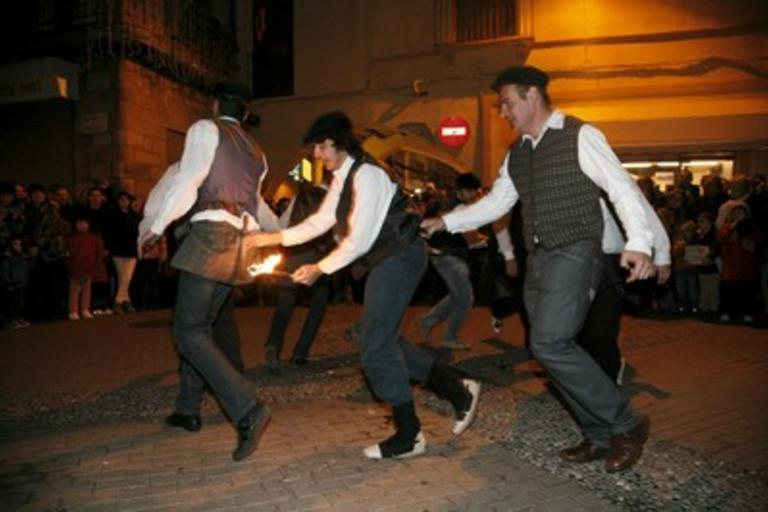

Visita · Tremp
El Ball del Contrapàs és una de les tradicions més singulars i estimades de Tremp i de Palau de Noguera. A Tremp, es balla cada 17 de gener , coincidint amb la festa de Sant Antoni Abat, patró…